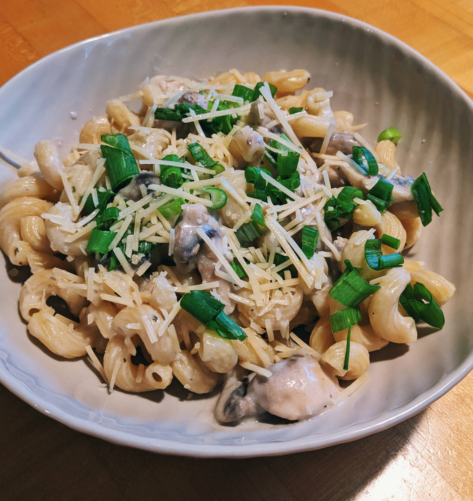

Creamy Mushroom Cavatappi

Description
Feeling like mushrooms? Then this recipe is for you.
This recipe mixes mushrooms with Cavatappi pasta, and creamy
garlic herb sauce. Add a little Parmesan cheese at the end
and you'll have a creamy, mushroom filled delight.
This recipe is quick and easy to make. Hardly any cooking
experience is needed. I hope you enjoy!
Ingredients
- 12 ounces Cavatappi pasta
- 1 lb cremini and/or white mushrooms
- 1 tsp extra-virgin olive oil
- 1 tbsp butter
- 2 clovs garlic, minced
- 1 small onion, diced
- 3 tbsp all-purpose flour
- 1 1/2 cup half-and-half or heavy cream
- 1 1/2 cup low-sodium chicken broth
- Salt and pepper to taste
- 1/2 cup grated Parmesan, plus more for serving
- 1 tsp chopped oregano(Fresh is best!)
Steps
- In a large pot of salted boiling water, cook pasta according to package
directions until al dente. Drain, reserving 1/2 cup pasta water, and return
to empty pot.
- In a large skillet, over medium-high heat, heat olive oil and butter. Add
mushrooms and cook for about 5 minutes or until golden. Add garlic and onions
and cook, stirring occasionally until tender. Add flour and stir until blended.
- Add half-and-half or heavy cream, chicken stock, Parmesan, and oregano and
season with salt and pepper. Bring to a low boil then reduce heat and simmer
for about 5 minutes.
- Add cooked pasta to skillet and toss well to coat. If sauce is too thick,
add a little pasta water until you reach desired consistency. Top with more
Parmesan cheese if desired and serve.